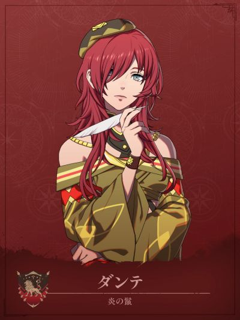

COMPANION DOSSIER
但丁
ダンテ · 炎之鬃（贝特朗队）
检索别名：但丁
喜欢什么，送什么
咖啡、书籍
喜欢的东西：她自己、快速书写、寻找戏剧性题材
兴趣：研究他人、观察他人反应
查看送礼原文与例外 →第一部 · 各路线加入条件
- 凯伊线
- 3S / 10R ・8000G
- 迪托利希线
- 2S / 8R ・8000G
- 赛奥朵拉线
- 3S / 6R ・8000G
- 蕾达线
- 3S / 10R ・8000G
S = 支援等级 · R = 名声等级 · — = 无法招募
查看招募原文与附加说明 →交涉要准备什么
本批尚未独立核对该角色交涉流程。先看上方原表的物品、金钱、外传与 S／R 门槛；没有写出明细不代表无条件加入。
怎么养，怎么转职
编辑培养建议
黑魔输出／补疗控场 · 双魔法机动备选
- 前期
- 实际入队后沿现有黑魔法职业培养，保留已会的白魔法补疗，不必退回初级重练。ウィンド、シェイバー可针对飞行敌人；物理承伤偏弱，出手前仍看命中、攻速和反击射程，不因隔两格就默认安全。
- 中期
- 主线可走萨满巫师 → 先知（ウァテス）：黑B备考，再向黑A的トロン推进，用3射程处理间接攻击敌人。先知兼用黑白魔法，黑魔次数翻倍、魔法命中+5。更缺治疗时可走白B主教；需要控场再练白Aフリーズ，使用前检查命中。
- 后期目标
- 第三部需要双魔法机动位时，补马D，完成ジュラの依頼并确认考试开放后选ヴァルキュリウム：魔法回复+10、魔法命中+5，但不自带两系次数翻倍。尚未开放或不缺机动可继续先知／主教；黑A德鲁伊不能用白魔，白A贤者不能用黑魔，转职前确认是否仍需兼顾トロン、补疗与フリーズ。
- 考试与解锁
- 先知黑B、主教白B；上级票证帝都3000G。ヴァルキュリウム按马D＋黑或白A备考，第三部フィーナの漁村市场最上级票证8000G。一考一票，开放与合格率以存档为准。想提早走游唱诗人还需马D＋黑或白B，并完成凯伊名声10白发鬼委托或蕾达「新商品を作ってお披露目したい4」；未开放就先用步兵。
- 取舍与限制
- 个人技能在周围2格队友战斗时，按该队友的（魅力÷2）%触发必避+10；Lv35习得并装备「追加演出+」后，个人技能触发时再追加该队友命中、必杀+10，并非常驻光环。别为覆盖技能暴露她，也别用她替代リブロー远程治疗位。四线招募均需8000G，已有法系够用时先留升级与装备预算。
这些是阶段性培养方向，并非必须逐级转职的固定链。适用难度及版本未做独立实测；优先满足当前队伍缺口。
本次新增条目经过来源页面核对，未逐项游戏内实测。没有补充明细的“交涉”仍待核验，不表示没有额外要求。